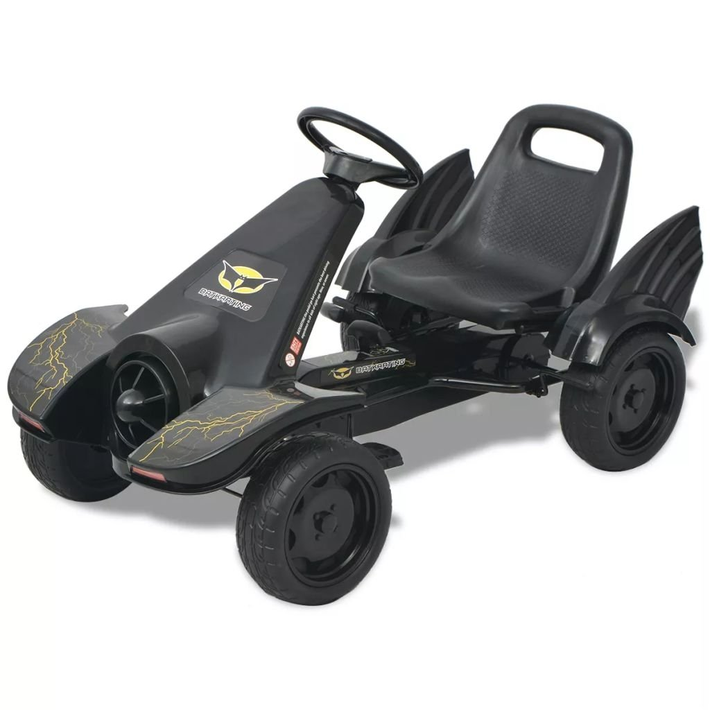

Kartingai | TEMA | 15min.lt
 COVID-19 Rinkimai Tv programa Orai.lt Žiūrėk Klausyk +12° Vilnius +12° Kaunas +13° Klaipėda +11° Šiauliai +11° Panevėžys +12° Alytus +11° Mažeikiai +11° Utena Suprasti Akimirksniu Naujausios 15MAX Lietuva Rinkimai 2020 Užsienis Verslas Vardai Sportas Gyvenimas Gazas Kultūra Maistas Eurolyga Koronavirusas 24sek Pasaulis Kišenėje Mokslas.IT Deuce Su vėju! Palaikyk tiesą Patikrinta 15min Pažadų metras Komentarai Tribūna Sveikata Emigrantai Laisvalaikis Pokeris Galerijos Video SauguKelyje.lt Kaime: tradicijos ir inovacijos Darnus judumas Žalias 100lietuvų.lt TV programa Orai.lt Ar žinai? Tyrimai Daugiau Pranešk Prisijungti Redaguoti paskyrą Skaitysiu vėliau Mano naujienos Mano receptai Mano pirkiniai Atsijungti Naujausios 15MAX Lietuva Rinkimai 2020 Užsienis Verslas Vardai Sportas Gyvenimas Gazas Kultūra Maistas Eurolyga Koronavirusas 24sek Pasaulis Kišenėje Mokslas.IT Deuce Su vėju! Palaikyk tiesą Patikrinta 15min Pažadų metras Komentarai Tribūna Sveikata Emigrantai Laisvalaikis Pokeris Galerijos Video SauguKelyje.lt Kaime: tradicijos ir inovacijos Darnus judumas Žalias 100lietuvų.lt TV programa Orai.lt Ar žinai? Tyrimai Daugiau Pranešk Prisijungti Redaguoti paskyrą Skaitysiu vėliau Mano naujienos Mano receptai Mano pirkiniai Atsijungti Aktualijos Verslas Sportas Gazas Mokslas.IT Pasaulis kišenėje 24sek Eurolyga Deuce Vardai Gyvenimas Maistas Ar žinai? Esports namai Galerijos Video Projektai Lietuva Užsienis Kriminalai Kultūra Sveikata Švietimas Emigrantai Komentarai Tribūna Gyvūnų klubas Konkursai Rinka Gatvė Sportas Testai saugukelyje.lt Rally Estonia 1006km lenktynės Moto Dream2drive Galerijos Soapbox Race Naujienos Galerijos Video Pasaulio geriausieji Mano tenisas Svarbu Aš manau! Pramogos Fotopolicija Pasiskųsk Keliauju Konkursai Gyvūnai Technologijos Laboratorija Kosmosas Žaidimai Galerijos Kelionių Pulsas Kelionių ekspertas Kelionių istorijos Tavo Roma Per Lietuvą Pasaulis tavo akimis Dienoraščiai Egzotikos kampelis Galerijos Video Finansai Bendrovės Energetika Transportas Verslumas Žemės ūkis Kvadratinis metras Karjera Medijos Pranešimai Startup Krepšinis Futbolas Lengvoji atletika Tenisas Vandens sportas Kovinis sportas Buriavimas Regbis Tenisas Pokeris Autosportas Žiemos sportas Muilas Ekstremalu Kita Politics Opinion Feature Economy Society Tribune ru.15min.lt Eurolyga.lt LKL NBA Kablys Kauno Žalgiris Rytas Galerijos Video Lietuva Europa Pamatyti Ragauti Keliauti Dalyvauti Specialiai jums Renginiai Kinas Teatras Muzika Literatūra Vizualieji menai Kaunas 2022 Kino pavasaris Sirenos Nepatogus kinas Venecijos bienalė 100 Lietuvų Asmenybė Naujienos Patikrinta 15min Rinkimų dalyviai Galerijos Video manoseimas.lt Naujienos Virtuvė Vieta Interviu Receptai Lietuva Pasaulis Muzika Galerijos Video Eurovizija Santykiai Šeima Sveikata Mityba Mada Grožis Namai Laisvalaikis Horoskopai Augintiniai Pokalbiai Piniginė Galerijos Apžvalgos Įdomi Lietuva Įdomus pasaulis Įdomūs klausimai Pasitikrink žinias Nacionalinė viktorina Naujienos Rezultatai / Tvarkaraštis Komandos Turnyrinė lentelė Europos taurė Spėlionė Naujienos PRO Video Mobilieji žaidimai Žaidėjai Žaidimų apžvalga Tribūna Kaip pradėti Industrija Naujausios Skaitomiausios Požiūris Idėjos Gyvenimas Verslas Įvykiai Apie Taisyklės Vardai Aktualu Pasaulis Kriminalai Automobiliai Sportas Įvairūs Autosportas Pasaulis kišenėje Krepšinis Autoavarijos Lietuva Verslas Sportas Gazas Mokslas.IT Pasaulis kišenėje 24sek Deuce Maistas Vardai Gyvenimas Ar žinai? Dalia Grybauskaitė Fotopasakojimai 100 Lietuvų Palaikyk tiesą Patikrinta 15min Pažadų metras Su vėju! Moterys, keitusios Lietuvą Dabar populiaru Kontaktai Reklama Karjera Naudojimosi taisyklės Privatumo politika Autoriai Interesų deklaracijos Akcininkai Etikos kodeksas Tiesiogiai Viename karščiausių Seimo rinkimų taškų Utenoje perskaičiuojami balsai: Paluckas ar Pupinis?
Kartingai
Tema Visos temos Organizatorių nuotr./„ARTkart“ taurės pirmas etapasKartingai – autosporto rūšis, kurioje lenktyniaujama mažais keturračiais automobiliais – kartais.